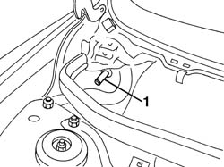
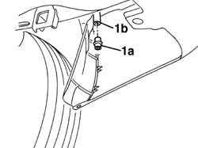
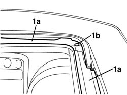

7030B38 sliding roof drainage pipes (water drain) - check
- Path
- Procedures > 70 FITTINGS > 7030 SUN ROOF AND HOOD > 7030B sliding roof > 7030B38 sliding roof drainage pipes (water drain) - check
- Kind
- repair procedure (removal / refitting; the operation number is the code)
- Applies to
- all engines; all production periods
- Interactive page
- https://sloeber94.github.io/elrnDB-a156/en/#/3238761
Applies to: all engines; all production periods
 Removing
Removing
 Refitting
Refitting7030B18 sliding roof glass - r+r
Set the sliding roof on so to place the slides in the completed open position .
Remove all possible foreign bodies (leaves ecc.) from the sliding roof compartment) from the sliding roof compartment
5050B34 windscreen wiper arm/s complete with blade - r+r (right and left side)
7055A18 Windscreen base TRIM - R.R.
1. Blow compressed air in the inferior edges of the anterior drainage pipeline. Blow compressed air in the inferior edges of the anterior drainage pipeline.

Applies to: all engines; all production periods
1. Working under the bumber Disconnect the unidirectional valves (1a) from the edges of the posterior drainage pipeline (1b).
Blow compressed air in the inferior edge of the posterior drainage pipeline ri.

Applies to: all engines; all production periods
1. Remove the possible foreign bodies from the races (1a) and from the drainage hole (1b) in the sliding compartment

Applies to: all engines; all production periods
Refitting
RemovingLet small quantities of water in the drainage races and in the drainage holes. Verify the outleak from the pipelines
Verify the efficiency of the unidirectional valves and install them
7055A18 Windscreen base TRIM - R.R.
5050B34 windscreen wiper arm/s complete with blade - r+r (right and left side)
Topics linked from this page (3)
- 5050B34 windscreen wiper arm/s complete with blade - r+r
- 7030B18 sliding roof glass - r+r
- 7055A18 Windscreen base TRIM - R.R.